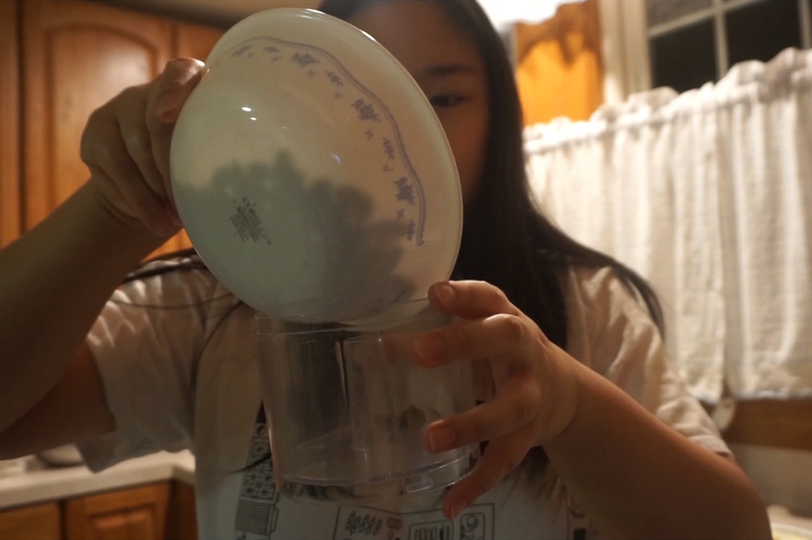
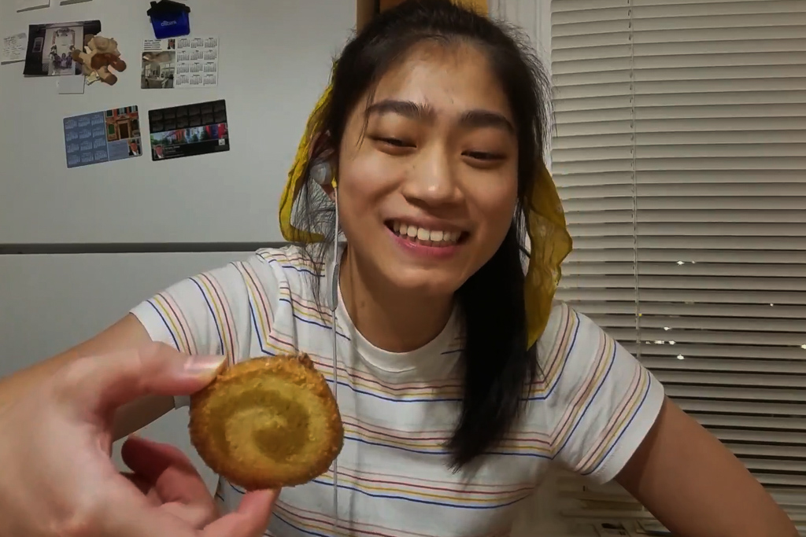
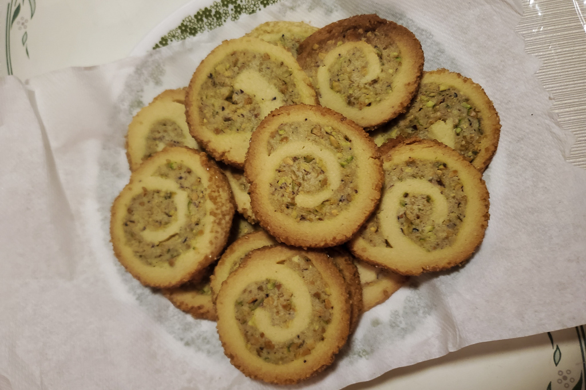
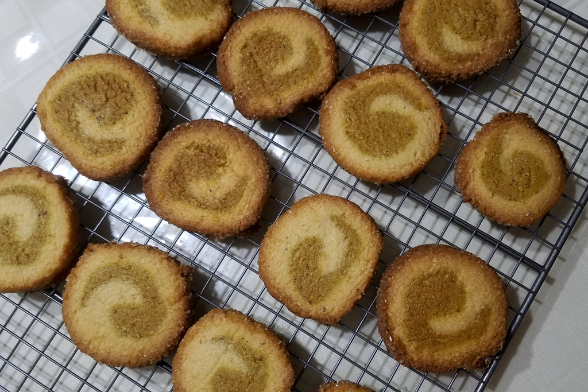

Back to Back Baking - Pistachio Pinwheel Cookies
Dec 3 - Written by Bonnie and Emily
We took a leaf off Bon Appetit’s YouTube Channel and thought we’d try our very own Back to Back Pastry Chef Challenge! On top of that, we got to make our very first recipe from Claire Saffitz’s Dessert Person recipe book!
Since Emily recently got a copy of Dessert Person and Bonnie has yet to, we decided that this was the perfect opportunity to do a back to back baking challenge! After flipping through all the recipes and tagging some of our favorites, we decided to start this series off with making Pistachio Pinwheel Cookies. These cookies were ideal because they didn’t require a ton of ingredients and could be made in a reasonable amount of time -- not to mention it was perfect considering Bonnie’s love for pistachios.
Claire suggests making the dough in a food processor; however, as neither one of us has an ideal one, we made our dough in a bowl so this is definitely a flexible recipe even if you don't have the right tools! We hit some snags with some of the steps but some confusing explanations and makeshift rolling pins later, we managed to make it to the final step of slicing our cookies and revealing that spiral.
However, we did hit a snag during the process that may have been our own fault. Now you’d think slicing the dough into cookies would be a simple process; however, since we chose to only bake half the dough, it took us a while to figure out how to slice the dough into the intended number of cookies. Our slices were not the most even, but seeing those beautiful spirals come out was definitely a satisfying experience.
Now for what you have all been waiting for, it’s time to taste our desserts! Typically in a back to back challenge, you’d switch goods and try the other person’s creation; however, since we did our challenge virtually, we settled on tasting our own. We reacted to how our cookies looked, mainly about how nice our spirals were. Bonnie’s spiral was definitely nicer than Emily’s, which she said looked more like a comma than a spiral.
Tastewise, we both agreed that there was more almond flavor than pistachio considering how this is a pistachio and almond cookie. We also found the resemblance between this cookie and the cookies that come in blue tins that you’ll typically find in stores around the holidays. Overall, the cookies were yummy and definitely worth making again; but if you’re willing to experiment, you can adjust the amount of almond extract and pistachios to make them taste even better.
